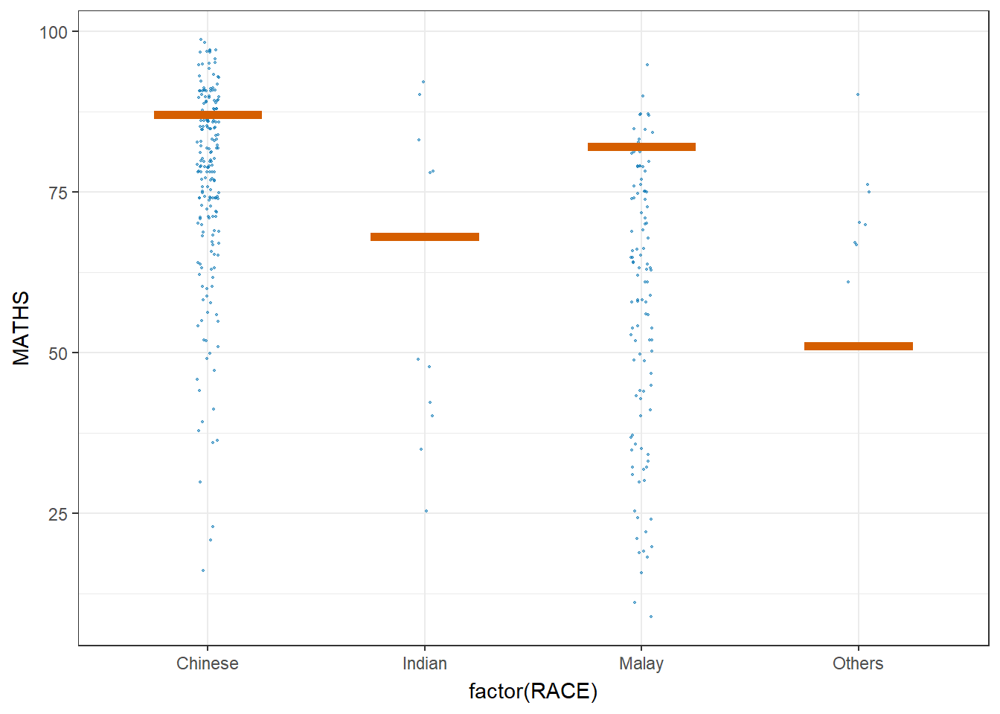

devtools::install_github("wilkelab/ungeviz")Hands-on Exercise 4 - Part 3
Visualising Uncertainty
Note: Last modified to include author’s details.
1. Getting Started
This hands-on exercise 4 is split into four segments:
Visualising Distribution
Visual Statistical Analysis
Visualising Uncertainty
Building Funnel Plot with R
1.1 Install and launch R packages
For the purpose of this exercise, the following R packages will be used, they are:
tidyverse, a family of R packages for data science process,
plotly for creating interactive plot,
gganimate for creating animation plot,
DT for displaying interactive html table,
crosstalk for for implementing cross-widget interactions (currently, linked brushing and filtering), and
ggdist for visualising distribution and uncertainty.
pacman::p_load(ungeviz, plotly, crosstalk,
DT, ggdist, ggridges,
colorspace, gganimate, tidyverse)1.2 Importing the data
Show code
exam <- read_csv("data/Exam_data.csv")1.3 Overview of the data
Show code
summary(exam) ID CLASS GENDER RACE
Length:322 Length:322 Length:322 Length:322
Class :character Class :character Class :character Class :character
Mode :character Mode :character Mode :character Mode :character
ENGLISH MATHS SCIENCE
Min. :21.00 Min. : 9.00 Min. :15.00
1st Qu.:59.00 1st Qu.:58.00 1st Qu.:49.25
Median :70.00 Median :74.00 Median :65.00
Mean :67.18 Mean :69.33 Mean :61.16
3rd Qu.:78.00 3rd Qu.:85.00 3rd Qu.:74.75
Max. :96.00 Max. :99.00 Max. :96.00 2. Visualising the uncertainty of point estimates: ggplot2 methods
A point estimate is a single number, such as a mean. Uncertainty, on the other hand, is expressed as standard error, confidence interval, or credible interval.
Important
- Don’t confuse the uncertainty of a point estimate with the variation in the sample
Derive necessary summary statistics
my_sum <- exam %>%
group_by(RACE) %>%
summarise(
n=n(),
mean=mean(MATHS),
sd=sd(MATHS)
) %>%
mutate(se=sd/sqrt(n-1))
Learning points
group_by()of dplyr package is used to group the observation by RACEsummarise()is used to compute the count of observations, mean, standard deviationmutate()is used to derive standard error of Maths by RACE, andthe output is save as a tibble data table called my_sum.
knitr::kable(head(my_sum), format = 'html')| RACE | n | mean | sd | se |
|---|---|---|---|---|
| Chinese | 193 | 76.50777 | 15.69040 | 1.132357 |
| Indian | 12 | 60.66667 | 23.35237 | 7.041005 |
| Malay | 108 | 57.44444 | 21.13478 | 2.043177 |
| Others | 9 | 69.66667 | 10.72381 | 3.791438 |
2.1 Plotting and Visualising points of estimates
Standard error (SE) of bars of mean maths score by race.
Show code
ggplot(my_sum) +
geom_errorbar(
aes(x=RACE,
ymin=mean-se,
ymax=mean+se),
width=0.2,
colour="black",
alpha=0.9,
size=0.5) +
geom_point(aes
(x=RACE,
y=mean),
stat="identity",
color="red",
size = 1.5,
alpha=1) +
ggtitle("Standard error of mean maths score by race")
Learning points
The error bars are computed by using the formula mean+/-se.
For
geom_point(), it is important to indicate stat=“identity”.
Confidence intervals (CI) of mean maths score by race.
Show code
ggplot(my_sum) +
geom_errorbar(
aes(x=reorder(RACE, -mean),
ymin=mean-1.96*se,
ymax=mean+1.96*se),
width=0.2,
colour="black",
alpha=0.9,
size=0.5) +
geom_point(aes
(x=RACE,
y=mean),
stat="identity",
color="red",
size = 1.5,
alpha=1) +
labs(x = "Maths score",
title = "95% confidence interval of mean maths score by race")
Learning points
The confidence intervals are computed by using the formula mean+/-1.96*se.
The error bars is sorted by using the average maths scores.
labs()argument of ggplot2 is used to change the x-axis label.
Interactive error bars for the 99% confidence interval of mean maths score by race.
Show code
shared_df = SharedData$new(my_sum)
bscols(widths = c(4,8),
ggplotly((ggplot(shared_df) +
geom_errorbar(aes(
x=reorder(RACE, -mean),
ymin=mean-2.58*se,
ymax=mean+2.58*se),
width=0.2,
colour="black",
alpha=0.9,
size=0.5) +
geom_point(aes(
x=RACE,
y=mean,
text = paste("Race:", `RACE`,
"<br>N:", `n`,
"<br>Avg. Scores:", round(mean, digits = 2),
"<br>95% CI:[",
round((mean-2.58*se), digits = 2), ",",
round((mean+2.58*se), digits = 2),"]")),
stat="identity",
color="red",
size = 1.5,
alpha=1) +
xlab("Race") +
ylab("Average Scores") +
theme_minimal() +
theme(axis.text.x = element_text(
angle = 45, vjust = 0.5, hjust=1)) +
ggtitle("99% Confidence interval of average /<br>maths scores by race")),
tooltip = "text"),
DT::datatable(shared_df,
rownames = FALSE,
class="compact",
width="100%",
options = list(pageLength = 10,
scrollX=T),
colnames = c("No. of pupils",
"Avg Scores",
"Std Dev",
"Std Error")) %>%
formatRound(columns=c('mean', 'sd', 'se'),
digits=2))3. Visualising Uncertainty: ggdist package
ggdist is an R package that provides a flexible set of ggplot2 geoms and stats designed especially for visualising distributions and uncertainty.
It is designed for both frequentist and Bayesian uncertainty visualization, taking the view that uncertainty visualization can be unified through the perspective of distribution visualization:
for frequentist models, one visualises confidence distributions or bootstrap distributions (see vignette(“freq-uncertainty-vis”));
for Bayesian models, one visualises probability distributions (see the tidybayes package, which builds on top of ggdist).
stat_pointinterval() of ggdist is used to build a visual for displaying distribution of maths scores by race.
Show code
exam %>%
ggplot(aes(x = RACE,
y = MATHS)) +
stat_pointinterval() +
labs(
title = "Visualising confidence intervals of mean math score",
subtitle = "Mean Point + Multiple-interval plot")
The following arguments are used in the code chunk below:
.width = 0.95
.point = median
.interval = qi
Show code
exam %>%
ggplot(aes(x = RACE, y = MATHS)) +
stat_pointinterval(.width = 0.95,
.point = median,
.interval = qi) +
labs(
title = "Visualising confidence intervals of median math score",
subtitle = "Median Point + Multiple-interval plot")
Show code
exam %>%
ggplot(aes(x = RACE,
y = MATHS),
ymin = mean - 1.96*se,
ymax = mean + 1.96*se,
width=0.2,
colour="black",
alpha=0.9,
size=0.5) +
stat_pointinterval(.interval = 0.95,
show.legend = FALSE) +
labs(
title = "Visualising confidence intervals of mean math score",
subtitle = "Mean Point + Multiple-interval plot")
Show code
exam %>%
ggplot(aes(x = RACE,
y = MATHS),
ymin = mean - 2.58*se,
ymax = mean + 2.58*se,
width=0.2,
colour="black",
alpha=0.9,
size=0.5) +
stat_pointinterval(.interval = 0.99,
show.legend = FALSE) +
labs(
title = "Visualising confidence intervals of mean math score",
subtitle = "Mean Point + Multiple-interval plot")
stat_gradientinterval() of ggdist is used to build a visual for displaying distribution of maths scores by race
Show code
exam %>%
ggplot(aes(x = RACE,
y = MATHS)) +
stat_gradientinterval(
fill = "skyblue",
show.legend = TRUE
) +
labs(
title = "Visualising confidence intervals of mean math score",
subtitle = "Gradient + interval plot")
4. Visualising Uncertainty with Hypothetical Outcome Plots (HOPs)
4.1 Getting Started
Install ungeviz package
devtools::install_github("wilkelab/ungeviz")library(ungeviz)ggplot(data = exam,
(aes(x = factor(RACE), y = MATHS))) +
geom_point(position = position_jitter(
height = 0.3, width = 0.05),
size = 0.4, color = "#0072B2", alpha = 1/2) +
geom_hpline(data = sampler(25, group = RACE), height = 0.6, color = "#D55E00") +
theme_bw() +
# `.draw` is a generated column indicating the sample draw
transition_states(.draw, 1, 3)